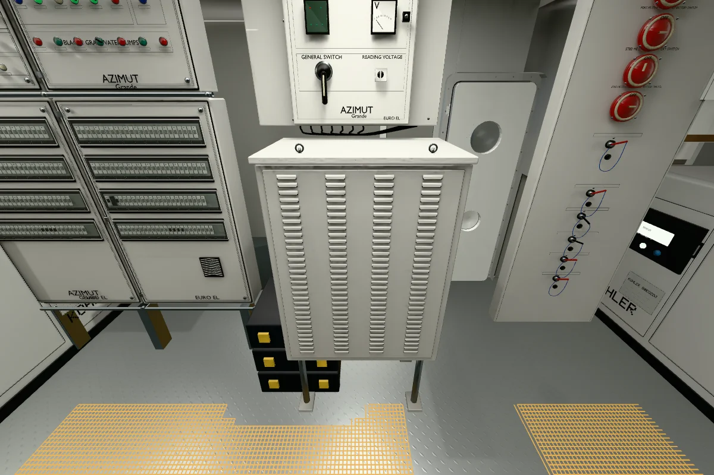
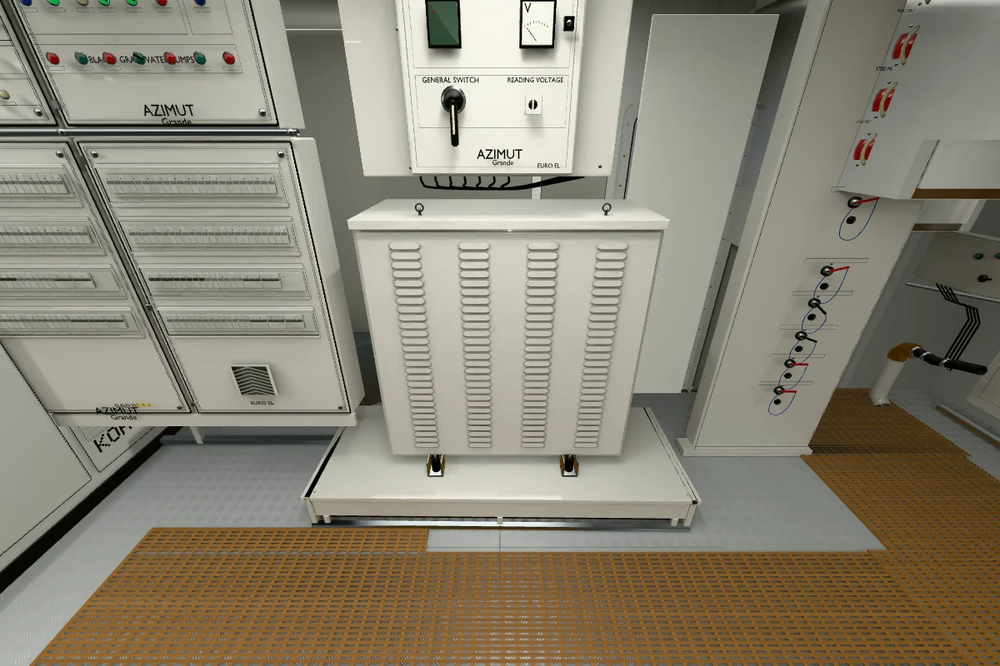
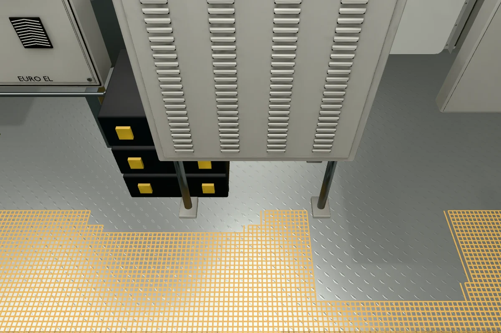
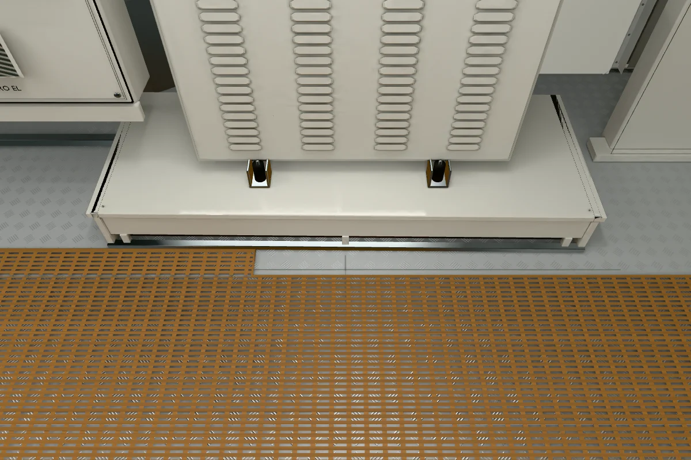

Pedestal, ranura, apoyos cortos, cuatro columnas de 28 lamas, protecciones agrupadas, rejilla de puerta recolocada, chapa y rejilla de paso con huecos reales, base de la columna y controles laterales. Puerta conservada y acceso funcional.
114.622 triángulos · atlas 60.44% · margen 4.27px · 90.112 celdas de 8px: 89.217 comparadas y 895 excluidas por máscara negra.
Candidata corregida; no se certifica la tolerancia global de cuatro píxeles ni el 95% de bordes claros.
Las celdas generadas no equivalen a aprobaciones manuales. Las comparaciones y mediciones por celda se conservan; el nadir negro queda excluido.
Una sola estación fotográfica: profundidades, caras ocultas y apoyos posteriores son estimados.
La revisión detectó anotaciones R01 inválidas; las comprobaciones inferiores usadas para ajustar son diagnósticas, no independientes.
Función interna del armario ventilado y conexiones eléctricas ocultas sin identificar.
La cámara baja automáticamente en el paso bajo la escalera conservada. La altura procede del modelo digital.
Reflejos estáticos aproximados durante la inspección nominal; FPS de hardware sin certificar.
La visita de referencia corresponde a un Grande36M; no confirma la identidad de Luz de Mar ni sus medidas reales.
La muestra de control de la alfombrilla conserva un desfase fino de filas/orientación; la proporción de aberturas está corregida, pero el patrón completo sigue sin aceptarse.
Se conserva parte del contexto anterior de otros generadores. El acabado claro de la chapa es una interpretación visual; su revestimiento real no está identificado.
Los20 acercamientos de64px con cuadrícula de8px están revisados, sin aceptación estricta: persisten diferencias de fase/perfil en lamas y alfombrilla, pendiente/acabado de rejilla, mandos de protecciones y tipografía.
general-150
h 150° · v 0° · FOV 90° × 67.38° · estación [9.15,0,3.18]
Anterior R01Corrección inferior R02
general-180
h 180° · v 0° · FOV 90° × 67.38° · estación [9.15,0,3.18]
Anterior R01Corrección inferior R02
general-210
h 210° · v 0° · FOV 90° × 67.38° · estación [9.15,0,3.18]
Anterior R01Corrección inferior R02
distribution-upper
h 147° · v -12° · FOV 45° × 30.87° · estación [9.15,0,3.18]
Anterior R01Corrección inferior R02
distribution-lower
h 147° · v 30° · FOV 55° × 38.28° · estación [9.15,0,3.18]
Anterior R01Corrección inferior R02
shore
h 180° · v -8° · FOV 45° × 30.87° · estación [9.15,0,3.18]
Anterior R01Corrección inferior R02
vented
h 180° · v 38° · FOV 55° × 38.28° · estación [9.15,0,3.18]
Anterior R01Corrección inferior R02
batteries
h 219° · v 18° · FOV 65° × 46.02° · estación [9.15,0,3.18]
Anterior R01Corrección inferior R02
lower-wide
h 180° · v 27° · FOV 105° × 81.97° · estación [9.15,0,3.18]

Anterior R01

Corrección inferior R02
pedestal
h 180° · v 52° · FOV 65° × 46.02° · estación [9.15,0,3.18]

Anterior R01

Corrección inferior R02
floor-side
h 240° · v 38° · FOV 78° × 56.73° · estación [9.15,0,3.18]